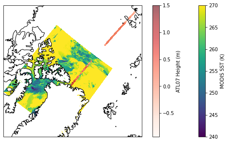
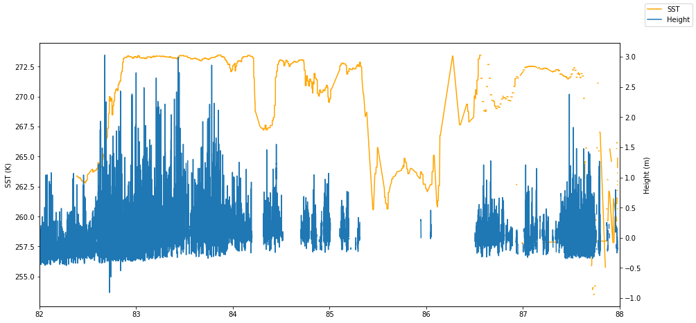

import os
from pathlib import Path
from pprint import pprint
# Access EDS
import requests
# Access AWS S3
import s3fs
# Read and work with datasets
import xarray as xr
import numpy as np
import h5py
# For plotting
import matplotlib.pyplot as plt
import cartopy.crs as ccrs
from shapely.geometry import box
# For resampling
import pyresample08. Pairing Cloud and non-Cloud Data
Accessing and harmonizing data located within and outside of the NASA Earthdata Cloud
Timing
- Exercise: 45 min
Summary
This tutorial will combine several workflow steps and components from the previous days, demonstrating the process of using the geolocation of data available outside of the Earthdata Cloud to then access coincident variables of cloud-accessible data. This may be a common use case as NASA Earthdata continues to migrate to the cloud, producing a “hybrid” data archive across Amazon Web Services (AWS) and original on-premise data storage systems. Additionally, you may also want to combine field measurements with remote sensing data available on the Earthdata Cloud.
This specific example explores the pairing of the ICESat-2 ATL07 Sea Ice Height data product, currently (as of November 2021) available publicly via direct download at the NSIDC DAAC, along with Sea Surface Temperature (SST) from the GHRSST MODIS L2 dataset (MODIS_A-JPL-L2P-v2019.0) available from PO.DAAC on the Earthdata Cloud.
The use case we’re looking at today centers over an area north of Greenland for a single day in June, where a melt pond was observed using the NASA OpenAltimetry application. Melt ponds are an important feature of Arctic sea ice dynamics, leading to an decrease in sea ice albedo and other changes in heat balance. Many NASA Earthdata datasets produce variables including sea ice albedo, sea surface temperature, air temperature, and sea ice height, which can be used to better understand these dynamics.
Objectives
- Practice skills searching for data in CMR, determining granule coverage across two datasets over an area of interest.
- Download data from an on-premise storage system to our cloud environment.
- Read in 1-dimensional trajectory data (ICESat-2 ATL07) into
xarrayand perform attribute conversions. - Select and read in sea surface temperature (SST) data (MODIS_A-JPL-L2P-v2019.0) from the Earthdata Cloud into
xarray. - Extract, resample, and plot coincident SST data based on ICESat-2 geolocation.
Import packages
Specify data, time range, and area of interest
We are going to focus on getting data for an area north of Greenland for a single day in June.
These bounding_box and temporal variables will be used for data search, subset, and access below:
# Bounding Box spatial parameter in decimal degree 'W,S,E,N' format.
bounding_box = '-62.8,81.7,-56.4,83'
# Each date in yyyy-MM-ddTHH:mm:ssZ format; date range in start,end format
temporal = '2019-06-22T00:00:00Z,2019-06-22T23:59:59Z'Since we’ve already demonstrated how to locate a dataset’s collection_id and use the cloud_hosted parameter to determine whether a dataset resides in the Earthdata Cloud, we are going to skip forward and declare these variables:
modis_concept_id = 'C1940473819-POCLOUD'
icesat2_concept_id = 'C2003771980-NSIDC_ECS'Search and download ICESat-2 ATL07 files
Perform a granule search over our time and area of interest. How many granules are returned?
granule_url = 'https://cmr.earthdata.nasa.gov/search/granules'response = requests.get(granule_url,
params={
'concept_id': icesat2_concept_id,
'temporal': temporal,
'bounding_box': bounding_box,
'page_size': 200,
},
headers={
'Accept': 'application/json'
}
)
print(response.headers['CMR-Hits'])2Print the file names, size, and links:
granules = response.json()['feed']['entry']
for granule in granules:
print(f'{granule["producer_granule_id"]} {granule["granule_size"]} {granule["links"][0]["href"]}')ATL07-01_20190622055317_12980301_004_01.h5 237.0905504227 https://n5eil01u.ecs.nsidc.org/DP9/ATLAS/ATL07.004/2019.06.22/ATL07-01_20190622055317_12980301_004_01.h5
ATL07-01_20190622200154_13070301_004_01.h5 230.9151573181 https://n5eil01u.ecs.nsidc.org/DP9/ATLAS/ATL07.004/2019.06.22/ATL07-01_20190622200154_13070301_004_01.h5Download ATL07 files
Although several services are supported for ICESat-2 data, we are demonstrating direct access through the “on-prem” file system at NSIDC for simplicity.
Some of these services include: - icepyx - From the icepyx documentation: “icepyx is both a software library and a community composed of ICESat-2 data users, developers, and the scientific community. We are working together to develop a shared library of resources - including existing resources, new code, tutorials, and use-cases/examples - that simplify the process of querying, obtaining, analyzing, and manipulating ICESat-2 datasets to enable scientific discovery.” - NSIDC DAAC Data Access and Service API - The API provided by the NSIDC DAAC allows you to access data programmatically using specific temporal and spatial filters. The same subsetting, reformatting, and reprojection services available on select data sets through NASA Earthdata Search can also be applied using this API. - IceFlow - The IceFlow python library simplifies accessing and combining data from several of NASA’s cryospheric altimetry missions, including ICESat/GLAS, Operation IceBridge, and ICESat-2. In particular, IceFlow harmonizes the various file formats and georeferencing parameters across several of the missions’ data sets, allowing you to analyze data across the multi-decadal time series.
We’ve found 2 granules. We’ll download the first one and write it to a file with the same name as the producer_granule_id.
We need the url for the granule as well. This is href links we printed out above.
icesat_id = granules[0]['producer_granule_id']
icesat_url = granules[0]['links'][0]['href']To retrieve the granule data, we use the requests.get() method, which will utilize the .netrc file on the backend to authenticate the request against Earthdata Login.
r = requests.get(icesat_url)The response returned by requests has the same structure as all the other responses: a header and contents. The header information has information about the response, including the size of the data we downloaded in bytes.
for k, v in r.headers.items():
print(f'{k}: {v}')Date: Thu, 18 Nov 2021 04:02:03 GMT
Server: Apache
Vary: User-Agent
Content-Disposition: attachment
Content-Length: 248607461
Keep-Alive: timeout=15, max=100
Connection: Keep-AliveThe contents needs to be saved to a file. To keep the directory clean, we will create a downloads directory to store the file. We can use a shell command to do this or use the makedirs method from the os package.
os.makedirs("downloads", exist_ok=True)You should see a downloads directory in the file browser.
To write the data to a file, we use open to open a file. We need to specify that the file is open for writing by using the write-mode w. We also need to specify that we want to write bytes by setting the binary-mode b. This is important because the response contents are bytes. The default mode for open is text-mode. So make sure you use b.
We’ll use the with statement context-manager to open the file, write the contents of the response, and then close the file. Once the data in r.content is written sucessfully to the file, or if there is an error, the file is closed by the context-manager.
We also need to prepend the downloads path to the filename. We do this using Path from the pathlib package in the standard library.
outfile = Path('downloads', icesat_id)if not outfile.exists():
with open(outfile, 'wb') as f:
f.write(r.content)ATL07-01_20190622055317_12980301_004_01.h5 is an HDF5 file. xarray can open this but you need to tell it which group to read the data from. In this case we read the sea ice segment height data for ground-track 1 left-beam. You can explore the variable hierarchy in Earthdata Search, by selecting the Customize option under Download Data.
This code block performs the following operations: - Extracts the height_segment_height variable from the heights group, along with the dimension variables contained in the higher level sea_ice_segments group, - Convert attributes from bytestrings to strings, - Drops the HDF attribute DIMENSION_LIST, - Sets _FillValue to NaN
variable_names = [
'/gt1l/sea_ice_segments/latitude',
'/gt1l/sea_ice_segments/longitude',
'/gt1l/sea_ice_segments/delta_time',
'/gt1l/sea_ice_segments/heights/height_segment_height'
]
with h5py.File(outfile, 'r') as h5:
data_vars = {}
for varname in variable_names:
var = h5[varname]
name = varname.split('/')[-1]
# Convert attributes
attrs = {}
for k, v in var.attrs.items():
if k != 'DIMENSION_LIST':
if isinstance(v, bytes):
attrs[k] = v.decode('utf-8')
else:
attrs[k] = v
data = var[:]
if '_FillValue' in attrs:
data = np.where(data < attrs['_FillValue'], data, np.nan)
data_vars[name] = (['segment'], data, attrs)
is2_ds = xr.Dataset(data_vars)
is2_ds<xarray.Dataset>
Dimensions: (segment: 235584)
Dimensions without coordinates: segment
Data variables:
latitude (segment) float64 82.38 82.38 82.38 ... 72.61 72.61
longitude (segment) float64 -55.11 -55.11 ... 145.1 145.1
delta_time (segment) float64 4.642e+07 4.642e+07 ... 4.642e+07
height_segment_height (segment) float32 nan nan nan ... -0.4335 -0.4463xarray.Dataset
- segment: 235584
- latitude(segment)float6482.38 82.38 82.38 ... 72.61 72.61
- contentType :
- referenceInformation
- coordinates :
- delta_time longitude
- description :
- Latitude, WGS84, North=+, Lat of segment center
- long_name :
- Latitude
- source :
- ATBD, section 4.4
- standard_name :
- latitude
- units :
- degrees_north
- valid_max :
- 90.0
- valid_min :
- -90.0
array([82.38431982, 82.38431982, 82.38431982, ..., 72.60984638, 72.60977493, 72.60970985]) - longitude(segment)float64-55.11 -55.11 ... 145.1 145.1
- contentType :
- referenceInformation
- coordinates :
- delta_time latitude
- description :
- Longitude, WGS84, East=+,Lon of segment center
- long_name :
- Longitude
- source :
- ATBD, section 4.4
- standard_name :
- longitude
- units :
- degrees_east
- valid_max :
- 180.0
- valid_min :
- -180.0
array([-55.10896068, -55.10896068, -55.10896068, ..., 145.05396164, 145.05392851, 145.05389832]) - delta_time(segment)float644.642e+07 4.642e+07 ... 4.642e+07
- CLASS :
- DIMENSION_SCALE
- NAME :
- gt1l/sea_ice_segments/delta_time
- REFERENCE_LIST :
- [(<HDF5 object reference>, 0) (<HDF5 object reference>, 0) (<HDF5 object reference>, 0) (<HDF5 object reference>, 0) (<HDF5 object reference>, 0) (<HDF5 object reference>, 0) (<HDF5 object reference>, 0) (<HDF5 object reference>, 0) (<HDF5 object reference>, 0) (<HDF5 object reference>, 0) (<HDF5 object reference>, 0) (<HDF5 object reference>, 0) (<HDF5 object reference>, 0) (<HDF5 object reference>, 0) (<HDF5 object reference>, 0) (<HDF5 object reference>, 0) (<HDF5 object reference>, 0) (<HDF5 object reference>, 0) (<HDF5 object reference>, 0) (<HDF5 object reference>, 0) (<HDF5 object reference>, 0) (<HDF5 object reference>, 0) (<HDF5 object reference>, 0) (<HDF5 object reference>, 0) (<HDF5 object reference>, 0) (<HDF5 object reference>, 0) (<HDF5 object reference>, 0) (<HDF5 object reference>, 0) (<HDF5 object reference>, 0) (<HDF5 object reference>, 0) (<HDF5 object reference>, 0) (<HDF5 object reference>, 0) (<HDF5 object reference>, 0) (<HDF5 object reference>, 0) (<HDF5 object reference>, 0) (<HDF5 object reference>, 0) (<HDF5 object reference>, 0) (<HDF5 object reference>, 0) (<HDF5 object reference>, 0) (<HDF5 object reference>, 0) (<HDF5 object reference>, 0) (<HDF5 object reference>, 0) (<HDF5 object reference>, 0) (<HDF5 object reference>, 0) (<HDF5 object reference>, 0) (<HDF5 object reference>, 0) (<HDF5 object reference>, 0) (<HDF5 object reference>, 0) (<HDF5 object reference>, 0) (<HDF5 object reference>, 0) (<HDF5 object reference>, 0) (<HDF5 object reference>, 0) (<HDF5 object reference>, 0) (<HDF5 object reference>, 0) (<HDF5 object reference>, 0) (<HDF5 object reference>, 0) (<HDF5 object reference>, 0) (<HDF5 object reference>, 0) (<HDF5 object reference>, 0) (<HDF5 object reference>, 0) (<HDF5 object reference>, 0) (<HDF5 object reference>, 0) (<HDF5 object reference>, 0) (<HDF5 object reference>, 0) (<HDF5 object reference>, 0) (<HDF5 object reference>, 0) (<HDF5 object reference>, 0) (<HDF5 object reference>, 0) (<HDF5 object reference>, 0) (<HDF5 object reference>, 0) (<HDF5 object reference>, 0) (<HDF5 object reference>, 0) (<HDF5 object reference>, 0) (<HDF5 object reference>, 0) (<HDF5 object reference>, 0) (<HDF5 object reference>, 0) (<HDF5 object reference>, 0) (<HDF5 object reference>, 0) (<HDF5 object reference>, 0) (<HDF5 object reference>, 0) (<HDF5 object reference>, 0) (<HDF5 object reference>, 0) (<HDF5 object reference>, 0) (<HDF5 object reference>, 0)]
- contentType :
- physicalMeasurement
- coordinates :
- latitude longitude
- description :
- Number of GPS seconds since the ATLAS SDP epoch. The ATLAS Standard Data Products (SDP) epoch offset is defined within /ancillary_data/atlas_sdp_gps_epoch as the number of GPS seconds between the GPS epoch (1980-01-06T00:00:00.000000Z UTC) and the ATLAS SDP epoch. By adding the offset contained within atlas_sdp_gps_epoch to delta time parameters, the time in gps_seconds relative to the GPS epoch can be computed.
- long_name :
- Elapsed GPS seconds
- source :
- telemetry
- standard_name :
- time
- units :
- seconds since 2018-01-01
array([46419293.64266939, 46419293.64266939, 46419293.64266939, ..., 46419681.87646231, 46419681.87759533, 46419681.87862704]) - height_segment_height(segment)float32nan nan nan ... -0.4335 -0.4463
- _FillValue :
- 3.4028235e+38
- contentType :
- referenceInformation
- coordinates :
- ../delta_time ../latitude ../longitude
- description :
- Mean height from along-track segment fit detremined by the sea ice algorithm. The sea ice height is relative to the tide-free MSS.
- long_name :
- height of segment surface
- source :
- ATBD, section 4.2.2.4
- units :
- meters
array([ nan, nan, nan, ..., -0.46550068, -0.43347716, -0.4462675 ], dtype=float32)
is2_ds.height_segment_height.plot() ;Determine the GHRSST MODIS L2 granules returned from our time and area of interest
response = requests.get(granule_url,
params={
'concept_id': modis_concept_id,
'temporal': temporal,
'bounding_box': bounding_box,
'page_size': 200,
},
headers={
'Accept': 'application/json'
}
)
print(response.headers['CMR-Hits'])14granules = response.json()['feed']['entry']
for granule in granules:
print(f'{granule["title"]} {granule["granule_size"]} {granule["links"][0]["href"]}')20190622000501-JPL-L2P_GHRSST-SSTskin-MODIS_A-D-v02.0-fv01.0 20.71552562713623 s3://podaac-ops-cumulus-protected/MODIS_A-JPL-L2P-v2019.0/20190622000501-JPL-L2P_GHRSST-SSTskin-MODIS_A-D-v02.0-fv01.0.nc
20190622014501-JPL-L2P_GHRSST-SSTskin-MODIS_A-D-v02.0-fv01.0 9.34600830078125E-5 s3://podaac-ops-cumulus-protected/MODIS_A-JPL-L2P-v2019.0/20190622014501-JPL-L2P_GHRSST-SSTskin-MODIS_A-D-v02.0-fv01.0.nc
20190622032501-JPL-L2P_GHRSST-SSTskin-MODIS_A-D-v02.0-fv01.0 21.307741165161133 s3://podaac-ops-cumulus-protected/MODIS_A-JPL-L2P-v2019.0/20190622032501-JPL-L2P_GHRSST-SSTskin-MODIS_A-D-v02.0-fv01.0.nc
20190622050001-JPL-L2P_GHRSST-SSTskin-MODIS_A-D-v02.0-fv01.0 9.34600830078125E-5 s3://podaac-ops-cumulus-protected/MODIS_A-JPL-L2P-v2019.0/20190622050001-JPL-L2P_GHRSST-SSTskin-MODIS_A-D-v02.0-fv01.0.nc
20190622050501-JPL-L2P_GHRSST-SSTskin-MODIS_A-D-v02.0-fv01.0 20.065649032592773 s3://podaac-ops-cumulus-protected/MODIS_A-JPL-L2P-v2019.0/20190622050501-JPL-L2P_GHRSST-SSTskin-MODIS_A-D-v02.0-fv01.0.nc
20190622064001-JPL-L2P_GHRSST-SSTskin-MODIS_A-D-v02.0-fv01.0 9.34600830078125E-5 s3://podaac-ops-cumulus-protected/MODIS_A-JPL-L2P-v2019.0/20190622064001-JPL-L2P_GHRSST-SSTskin-MODIS_A-D-v02.0-fv01.0.nc
20190622064501-JPL-L2P_GHRSST-SSTskin-MODIS_A-N-v02.0-fv01.0 18.602201461791992 s3://podaac-ops-cumulus-protected/MODIS_A-JPL-L2P-v2019.0/20190622064501-JPL-L2P_GHRSST-SSTskin-MODIS_A-N-v02.0-fv01.0.nc
20190622064501-JPL-L2P_GHRSST-SSTskin-MODIS_A-D-v02.0-fv01.0 18.665077209472656 s3://podaac-ops-cumulus-protected/MODIS_A-JPL-L2P-v2019.0/20190622064501-JPL-L2P_GHRSST-SSTskin-MODIS_A-D-v02.0-fv01.0.nc
20190622082001-JPL-L2P_GHRSST-SSTskin-MODIS_A-D-v02.0-fv01.0 19.782299995422363 s3://podaac-ops-cumulus-protected/MODIS_A-JPL-L2P-v2019.0/20190622082001-JPL-L2P_GHRSST-SSTskin-MODIS_A-D-v02.0-fv01.0.nc
20190622100001-JPL-L2P_GHRSST-SSTskin-MODIS_A-D-v02.0-fv01.0 19.13440227508545 s3://podaac-ops-cumulus-protected/MODIS_A-JPL-L2P-v2019.0/20190622100001-JPL-L2P_GHRSST-SSTskin-MODIS_A-D-v02.0-fv01.0.nc
20190622113501-JPL-L2P_GHRSST-SSTskin-MODIS_A-D-v02.0-fv01.0 20.3239164352417 s3://podaac-ops-cumulus-protected/MODIS_A-JPL-L2P-v2019.0/20190622113501-JPL-L2P_GHRSST-SSTskin-MODIS_A-D-v02.0-fv01.0.nc
20190622114001-JPL-L2P_GHRSST-SSTskin-MODIS_A-D-v02.0-fv01.0 9.34600830078125E-5 s3://podaac-ops-cumulus-protected/MODIS_A-JPL-L2P-v2019.0/20190622114001-JPL-L2P_GHRSST-SSTskin-MODIS_A-D-v02.0-fv01.0.nc
20190622163001-JPL-L2P_GHRSST-SSTskin-MODIS_A-D-v02.0-fv01.0 19.257243156433105 s3://podaac-ops-cumulus-protected/MODIS_A-JPL-L2P-v2019.0/20190622163001-JPL-L2P_GHRSST-SSTskin-MODIS_A-D-v02.0-fv01.0.nc
20190622181001-JPL-L2P_GHRSST-SSTskin-MODIS_A-D-v02.0-fv01.0 19.93498420715332 s3://podaac-ops-cumulus-protected/MODIS_A-JPL-L2P-v2019.0/20190622181001-JPL-L2P_GHRSST-SSTskin-MODIS_A-D-v02.0-fv01.0.ncLoad data into xarray via S3 direct access
Our CMR granule search returned 14 files for our time and area of interest. However, not all granules will be suitable for analysis.
I’ve identified the image with granule id G1956158784-POCLOUD as a good candidate, this is the 9th granule. In this image, our area of interest is close to nadir. This means that the instantaneous field of view over the area of interest cover a smaller area than at the edge of the image.
We are looking for the link for direct download access via s3. This is a url but with a prefix s3://. This happens to be the first href link in the metadata.
For a single granule we can cut and paste the s3 link. If we have several granules, the s3 links can be extracted with some simple code.
granule = granules[9]
for link in granule['links']:
if link['href'].startswith('s3://'):
s3_link = link['href']
s3_link's3://podaac-ops-cumulus-protected/MODIS_A-JPL-L2P-v2019.0/20190622100001-JPL-L2P_GHRSST-SSTskin-MODIS_A-D-v02.0-fv01.0.nc'Get S3 credentials
As with the previous S3 download tutorials we need credentials to access data from s3: access keys and tokens.
s3_credentials = requests.get('https://archive.podaac.earthdata.nasa.gov/s3credentials').json()Essentially, what we are doing in this step is to “mount” the s3 bucket as a file system. This allows us to treat the S3 bucket in a similar way to a local file system.
s3_fs = s3fs.S3FileSystem(
key=s3_credentials["accessKeyId"],
secret=s3_credentials["secretAccessKey"],
token=s3_credentials["sessionToken"],
)Open a s3 file
Now we have the S3FileSystem set up, we can access the granule. xarray cannot open a S3File directly, so we use the open method for the S3FileSystem to open the granule using the endpoint url we extracted from the metadata. We also have to set the mode='rb'. This opens the granule in read-only mode and in byte-mode. Byte-mode is important. By default, open opens a file as text - in this case it would just be a string of characters - and xarray doesn’t know what to do with that.
We then pass the S3File object f to xarray.open_dataset. For this dataset, we also have to set decode_cf=False. This switch tells xarray not to use information contained in variable attributes to generate human readable coordinate variables. Normally, this should work for netcdf files but for this particular cloud-hosted dataset, variable attribute data is not in the form expected by xarray. We’ll fix this.
f = s3_fs.open(s3_link, mode='rb')
modis_ds = xr.open_dataset(f, decode_cf=False)If you click on the Show/Hide Attributes icon (the first document-like icon to the right of coordinate variable metadata) you can see that attributes are one-element arrays containing bytestrings.
modis_ds<xarray.Dataset>
Dimensions: (nj: 2030, ni: 1354, time: 1)
Coordinates:
* time (time) int32 1214042401
Dimensions without coordinates: nj, ni
Data variables:
lat (nj, ni) float32 ...
lon (nj, ni) float32 ...
sea_surface_temperature (time, nj, ni) int16 ...
sst_dtime (time, nj, ni) int16 ...
quality_level (time, nj, ni) int8 ...
sses_bias (time, nj, ni) int8 ...
sses_standard_deviation (time, nj, ni) int8 ...
l2p_flags (time, nj, ni) int16 ...
chlorophyll_a (time, nj, ni) float32 ...
K_490 (time, nj, ni) int16 ...
wind_speed (time, nj, ni) int8 ...
dt_analysis (time, nj, ni) int8 ...
Attributes: (12/49)
Conventions: [b'CF-1.7, ACDD-1.3']
title: [b'MODIS Aqua L2P SST']
summary: [b'Sea surface temperature retrievals produce...
references: [b'GHRSST Data Processing Specification v2r5']
institution: [b'NASA/JPL/OBPG/RSMAS']
history: [b'MODIS L2P created at JPL PO.DAAC']
... ...
publisher_email: [b'ghrsst-po@nceo.ac.uk']
processing_level: [b'L2P']
cdm_data_type: [b'swath']
startDirection: [b'Ascending']
endDirection: [b'Descending']
day_night_flag: [b'Day']xarray.Dataset
- nj: 2030
- ni: 1354
- time: 1
- time(time)int321214042401
- long_name :
- [b'reference time of sst file']
- standard_name :
- [b'time']
- units :
- [b'seconds since 1981-01-01 00:00:00']
- comment :
- [b'time of first sensor observation']
- coverage_content_type :
- [b'coordinate']
array([1214042401], dtype=int32)
- lat(nj, ni)float32...
- long_name :
- [b'latitude']
- standard_name :
- [b'latitude']
- units :
- [b'degrees_north']
- _FillValue :
- [-999.]
- valid_min :
- [-90.]
- valid_max :
- [90.]
- comment :
- [b'geographical coordinates, WGS84 projection']
- coverage_content_type :
- [b'coordinate']
[2748620 values with dtype=float32]
- lon(nj, ni)float32...
- long_name :
- [b'longitude']
- standard_name :
- [b'longitude']
- units :
- [b'degrees_east']
- _FillValue :
- [-999.]
- valid_min :
- [-180.]
- valid_max :
- [180.]
- comment :
- [b'geographical coordinates, WGS84 projection']
- coverage_content_type :
- [b'coordinate']
[2748620 values with dtype=float32]
- sea_surface_temperature(time, nj, ni)int16...
- long_name :
- [b'sea surface temperature']
- standard_name :
- [b'sea_surface_skin_temperature']
- units :
- [b'kelvin']
- _FillValue :
- [-32767]
- valid_min :
- [-1000]
- valid_max :
- [10000]
- comment :
- [b'sea surface temperature from thermal IR (11 um) channels']
- scale_factor :
- [0.005]
- add_offset :
- [273.15]
- source :
- [b'NASA and University of Miami']
- coordinates :
- [b'lon lat']
- coverage_content_type :
- [b'physicalMeasurement']
[2748620 values with dtype=int16]
- sst_dtime(time, nj, ni)int16...
- long_name :
- [b'time difference from reference time']
- units :
- [b'seconds']
- _FillValue :
- [-32768]
- valid_min :
- [-32767]
- valid_max :
- [32767]
- comment :
- [b'time plus sst_dtime gives seconds after 00:00:00 UTC January 1, 1981']
- coordinates :
- [b'lon lat']
- coverage_content_type :
- [b'referenceInformation']
[2748620 values with dtype=int16]
- quality_level(time, nj, ni)int8...
- long_name :
- [b'quality level of SST pixel']
- _FillValue :
- [-128]
- valid_min :
- [0]
- valid_max :
- [5]
- comment :
- [b'thermal IR SST proximity confidence value; signed byte array: WARNING Some applications are unable to properly handle signed byte values. If values are encountered > 127, please subtract 256 from this reported value']
- coordinates :
- [b'lon lat']
- flag_values :
- [0 1 2 3 4 5]
- flag_meanings :
- [b'no_data bad_data worst_quality low_quality acceptable_quality best_quality']
- coverage_content_type :
- [b'qualityInformation']
[2748620 values with dtype=int8]
- sses_bias(time, nj, ni)int8...
- long_name :
- [b'SSES bias error based on proximity confidence flags']
- units :
- [b'kelvin']
- _FillValue :
- [-128]
- valid_min :
- [-127]
- valid_max :
- [127]
- comment :
- [b'thermal IR SST bias error; signed byte array: WARNING Some applications are unable to properly handle signed byte values. If values are encountered > 127, please subtract 256 from this reported value']
- scale_factor :
- [0.15748031]
- add_offset :
- [0.]
- coordinates :
- [b'lon lat']
- coverage_content_type :
- [b'auxiliaryInformation']
[2748620 values with dtype=int8]
- sses_standard_deviation(time, nj, ni)int8...
- long_name :
- [b'SSES standard deviation error based on proximity confidence flags']
- units :
- [b'kelvin']
- _FillValue :
- [-128]
- valid_min :
- [-127]
- valid_max :
- [127]
- comment :
- [b'thermal IR SST standard deviation error; signed byte array: WARNING Some applications are unable to properly handle signed byte values. If values are encountered > 127, please subtract 256 from this reported value']
- scale_factor :
- [0.07874016]
- add_offset :
- [10.]
- coordinates :
- [b'lon lat']
- coverage_content_type :
- [b'auxiliaryInformation']
[2748620 values with dtype=int8]
- l2p_flags(time, nj, ni)int16...
- long_name :
- [b'L2P flags']
- valid_min :
- [0]
- valid_max :
- [16]
- comment :
- [b'These flags can be used to further filter data variables']
- coordinates :
- [b'lon lat']
- flag_meanings :
- [b'microwave land ice lake river']
- flag_masks :
- [ 1 2 4 8 16]
- coverage_content_type :
- [b'qualityInformation']
[2748620 values with dtype=int16]
- chlorophyll_a(time, nj, ni)float32...
- long_name :
- [b'Chlorophyll Concentration, OC3 Algorithm']
- units :
- [b'mg m^-3']
- _FillValue :
- [-32767.]
- valid_min :
- [0.001]
- valid_max :
- [100.]
- comment :
- [b'non L2P core field']
- coordinates :
- [b'lon lat']
- coverage_content_type :
- [b'auxiliaryInformation']
[2748620 values with dtype=float32]
- K_490(time, nj, ni)int16...
- long_name :
- [b'Diffuse attenuation coefficient at 490 nm (OBPG)']
- units :
- [b'm^-1']
- _FillValue :
- [-32767]
- valid_min :
- [50]
- valid_max :
- [30000]
- comment :
- [b'non L2P core field']
- scale_factor :
- [0.0002]
- add_offset :
- [0.]
- coordinates :
- [b'lon lat']
- coverage_content_type :
- [b'auxiliaryInformation']
[2748620 values with dtype=int16]
- wind_speed(time, nj, ni)int8...
- long_name :
- [b'10m wind speed']
- standard_name :
- [b'wind_speed']
- units :
- [b'm s-1']
- _FillValue :
- [-128]
- valid_min :
- [-127]
- valid_max :
- [127]
- comment :
- [b'Wind at 10 meters above the sea surface']
- scale_factor :
- [0.2]
- add_offset :
- [25.]
- source :
- [b'TBD. Placeholder. Currently empty']
- coordinates :
- [b'lon lat']
- grid_mapping :
- [b'TBD']
- time_offset :
- [2.]
- height :
- [b'10 m']
- coverage_content_type :
- [b'auxiliaryInformation']
[2748620 values with dtype=int8]
- dt_analysis(time, nj, ni)int8...
- long_name :
- [b'deviation from SST reference climatology']
- units :
- [b'kelvin']
- _FillValue :
- [-128]
- valid_min :
- [-127]
- valid_max :
- [127]
- comment :
- [b'TBD']
- scale_factor :
- [0.1]
- add_offset :
- [0.]
- source :
- [b'TBD. Placeholder. Currently empty']
- coordinates :
- [b'lon lat']
- coverage_content_type :
- [b'auxiliaryInformation']
[2748620 values with dtype=int8]
- Conventions :
- [b'CF-1.7, ACDD-1.3']
- title :
- [b'MODIS Aqua L2P SST']
- summary :
- [b'Sea surface temperature retrievals produced at the NASA OBPG for the MODIS Aqua sensor. These have been reformatted to GHRSST GDS specifications by the JPL PO.DAAC']
- references :
- [b'GHRSST Data Processing Specification v2r5']
- institution :
- [b'NASA/JPL/OBPG/RSMAS']
- history :
- [b'MODIS L2P created at JPL PO.DAAC']
- comment :
- [b'L2P Core without DT analysis or other ancillary fields; Day, Start Node:Ascending, End Node:Descending; WARNING Some applications are unable to properly handle signed byte values. If values are encountered > 127, please subtract 256 from this reported value; Refined']
- license :
- [b'GHRSST and PO.DAAC protocol allow data use as free and open.']
- id :
- [b'MODIS_A-JPL-L2P-v2019.0']
- naming_authority :
- [b'org.ghrsst']
- product_version :
- [b'2019.0']
- uuid :
- [b'f6e1f61d-c4a4-4c17-8354-0c15e12d688b']
- gds_version_id :
- [b'2.0']
- netcdf_version_id :
- [b'4.1']
- date_created :
- [b'20200221T085224Z']
- file_quality_level :
- [3]
- spatial_resolution :
- [b'1km']
- start_time :
- [b'20190622T100001Z']
- time_coverage_start :
- [b'20190622T100001Z']
- stop_time :
- [b'20190622T100459Z']
- time_coverage_end :
- [b'20190622T100459Z']
- northernmost_latitude :
- [89.9862]
- southernmost_latitude :
- [66.2723]
- easternmost_longitude :
- [-45.9467]
- westernmost_longitude :
- [152.489]
- source :
- [b'MODIS sea surface temperature observations for the OBPG']
- platform :
- [b'Aqua']
- sensor :
- [b'MODIS']
- metadata_link :
- [b'http://podaac.jpl.nasa.gov/ws/metadata/dataset/?format=iso&shortName=MODIS_A-JPL-L2P-v2019.0']
- keywords :
- [b'Oceans > Ocean Temperature > Sea Surface Temperature']
- keywords_vocabulary :
- [b'NASA Global Change Master Directory (GCMD) Science Keywords']
- standard_name_vocabulary :
- [b'NetCDF Climate and Forecast (CF) Metadata Convention']
- geospatial_lat_units :
- [b'degrees_north']
- geospatial_lat_resolution :
- [0.01]
- geospatial_lon_units :
- [b'degrees_east']
- geospatial_lon_resolution :
- [0.01]
- acknowledgment :
- [b'The MODIS L2P sea surface temperature data are sponsored by NASA']
- creator_name :
- [b'Ed Armstrong, JPL PO.DAAC']
- creator_email :
- [b'edward.m.armstrong@jpl.nasa.gov']
- creator_url :
- [b'http://podaac.jpl.nasa.gov']
- project :
- [b'Group for High Resolution Sea Surface Temperature']
- publisher_name :
- [b'The GHRSST Project Office']
- publisher_url :
- [b'http://www.ghrsst.org']
- publisher_email :
- [b'ghrsst-po@nceo.ac.uk']
- processing_level :
- [b'L2P']
- cdm_data_type :
- [b'swath']
- startDirection :
- [b'Ascending']
- endDirection :
- [b'Descending']
- day_night_flag :
- [b'Day']
To fix this, we need to extract array elements as scalars, and convert those scalars from bytestrings to strings. We use the decode method to do this. The bytestrings are encoded as utf-8, which is a unicode character format. This is the default encoding for decode but we’ve included it as an argument to be explicit.
Not all attributes are bytestrings. Some are floats. Take a look at _FillValue, and valid_min and valid_max. To avoid an error, we use the isinstance function to check if the value of an attributes is type bytes - a bytestring. If it is, then we decode it. If not, we just extract the scalar and do nothing else.
We also fix the global attributes.
def fix_attributes(da):
'''Decodes bytestring attributes to strings'''
for attr, value in da.attrs.items():
if isinstance(value[0], bytes):
da.attrs[attr] = value[0].decode('utf-8')
else:
da.attrs[attr] = value[0]
return
# Fix variable attributes
for var in modis_ds.variables:
da = modis_ds[var]
fix_attributes(da)
# Fix global attributes
fix_attributes(modis_ds)With this done, we can use the xarray function decode_cf to convert the attributes.
modis_ds = xr.decode_cf(modis_ds)modis_ds<xarray.Dataset>
Dimensions: (nj: 2030, ni: 1354, time: 1)
Coordinates:
lat (nj, ni) float32 ...
lon (nj, ni) float32 ...
* time (time) datetime64[ns] 2019-06-22T10:00:01
Dimensions without coordinates: nj, ni
Data variables:
sea_surface_temperature (time, nj, ni) float32 ...
sst_dtime (time, nj, ni) timedelta64[ns] ...
quality_level (time, nj, ni) float32 ...
sses_bias (time, nj, ni) float32 ...
sses_standard_deviation (time, nj, ni) float32 ...
l2p_flags (time, nj, ni) int16 ...
chlorophyll_a (time, nj, ni) float32 ...
K_490 (time, nj, ni) float32 ...
wind_speed (time, nj, ni) float32 ...
dt_analysis (time, nj, ni) float32 ...
Attributes: (12/49)
Conventions: CF-1.7, ACDD-1.3
title: MODIS Aqua L2P SST
summary: Sea surface temperature retrievals produced a...
references: GHRSST Data Processing Specification v2r5
institution: NASA/JPL/OBPG/RSMAS
history: MODIS L2P created at JPL PO.DAAC
... ...
publisher_email: ghrsst-po@nceo.ac.uk
processing_level: L2P
cdm_data_type: swath
startDirection: Ascending
endDirection: Descending
day_night_flag: Dayxarray.Dataset
- nj: 2030
- ni: 1354
- time: 1
- lat(nj, ni)float32...
- long_name :
- latitude
- standard_name :
- latitude
- units :
- degrees_north
- valid_min :
- -90.0
- valid_max :
- 90.0
- comment :
- geographical coordinates, WGS84 projection
- coverage_content_type :
- coordinate
[2748620 values with dtype=float32]
- lon(nj, ni)float32...
- long_name :
- longitude
- standard_name :
- longitude
- units :
- degrees_east
- valid_min :
- -180.0
- valid_max :
- 180.0
- comment :
- geographical coordinates, WGS84 projection
- coverage_content_type :
- coordinate
[2748620 values with dtype=float32]
- time(time)datetime64[ns]2019-06-22T10:00:01
- long_name :
- reference time of sst file
- standard_name :
- time
- comment :
- time of first sensor observation
- coverage_content_type :
- coordinate
array(['2019-06-22T10:00:01.000000000'], dtype='datetime64[ns]')
- sea_surface_temperature(time, nj, ni)float32...
- long_name :
- sea surface temperature
- standard_name :
- sea_surface_skin_temperature
- units :
- kelvin
- valid_min :
- -1000
- valid_max :
- 10000
- comment :
- sea surface temperature from thermal IR (11 um) channels
- source :
- NASA and University of Miami
- coverage_content_type :
- physicalMeasurement
[2748620 values with dtype=float32]
- sst_dtime(time, nj, ni)timedelta64[ns]...
- long_name :
- time difference from reference time
- valid_min :
- -32767
- valid_max :
- 32767
- comment :
- time plus sst_dtime gives seconds after 00:00:00 UTC January 1, 1981
- coverage_content_type :
- referenceInformation
[2748620 values with dtype=timedelta64[ns]]
- quality_level(time, nj, ni)float32...
- long_name :
- quality level of SST pixel
- valid_min :
- 0
- valid_max :
- 5
- comment :
- thermal IR SST proximity confidence value; signed byte array: WARNING Some applications are unable to properly handle signed byte values. If values are encountered > 127, please subtract 256 from this reported value
- flag_values :
- 0
- flag_meanings :
- no_data bad_data worst_quality low_quality acceptable_quality best_quality
- coverage_content_type :
- qualityInformation
[2748620 values with dtype=float32]
- sses_bias(time, nj, ni)float32...
- long_name :
- SSES bias error based on proximity confidence flags
- units :
- kelvin
- valid_min :
- -127
- valid_max :
- 127
- comment :
- thermal IR SST bias error; signed byte array: WARNING Some applications are unable to properly handle signed byte values. If values are encountered > 127, please subtract 256 from this reported value
- coverage_content_type :
- auxiliaryInformation
[2748620 values with dtype=float32]
- sses_standard_deviation(time, nj, ni)float32...
- long_name :
- SSES standard deviation error based on proximity confidence flags
- units :
- kelvin
- valid_min :
- -127
- valid_max :
- 127
- comment :
- thermal IR SST standard deviation error; signed byte array: WARNING Some applications are unable to properly handle signed byte values. If values are encountered > 127, please subtract 256 from this reported value
- coverage_content_type :
- auxiliaryInformation
[2748620 values with dtype=float32]
- l2p_flags(time, nj, ni)int16...
- long_name :
- L2P flags
- valid_min :
- 0
- valid_max :
- 16
- comment :
- These flags can be used to further filter data variables
- flag_meanings :
- microwave land ice lake river
- flag_masks :
- 1
- coverage_content_type :
- qualityInformation
[2748620 values with dtype=int16]
- chlorophyll_a(time, nj, ni)float32...
- long_name :
- Chlorophyll Concentration, OC3 Algorithm
- units :
- mg m^-3
- valid_min :
- 0.001
- valid_max :
- 100.0
- comment :
- non L2P core field
- coverage_content_type :
- auxiliaryInformation
[2748620 values with dtype=float32]
- K_490(time, nj, ni)float32...
- long_name :
- Diffuse attenuation coefficient at 490 nm (OBPG)
- units :
- m^-1
- valid_min :
- 50
- valid_max :
- 30000
- comment :
- non L2P core field
- coverage_content_type :
- auxiliaryInformation
[2748620 values with dtype=float32]
- wind_speed(time, nj, ni)float32...
- long_name :
- 10m wind speed
- standard_name :
- wind_speed
- units :
- m s-1
- valid_min :
- -127
- valid_max :
- 127
- comment :
- Wind at 10 meters above the sea surface
- source :
- TBD. Placeholder. Currently empty
- grid_mapping :
- TBD
- time_offset :
- 2.0
- height :
- 10 m
- coverage_content_type :
- auxiliaryInformation
[2748620 values with dtype=float32]
- dt_analysis(time, nj, ni)float32...
- long_name :
- deviation from SST reference climatology
- units :
- kelvin
- valid_min :
- -127
- valid_max :
- 127
- comment :
- TBD
- source :
- TBD. Placeholder. Currently empty
- coverage_content_type :
- auxiliaryInformation
[2748620 values with dtype=float32]
- Conventions :
- CF-1.7, ACDD-1.3
- title :
- MODIS Aqua L2P SST
- summary :
- Sea surface temperature retrievals produced at the NASA OBPG for the MODIS Aqua sensor. These have been reformatted to GHRSST GDS specifications by the JPL PO.DAAC
- references :
- GHRSST Data Processing Specification v2r5
- institution :
- NASA/JPL/OBPG/RSMAS
- history :
- MODIS L2P created at JPL PO.DAAC
- comment :
- L2P Core without DT analysis or other ancillary fields; Day, Start Node:Ascending, End Node:Descending; WARNING Some applications are unable to properly handle signed byte values. If values are encountered > 127, please subtract 256 from this reported value; Refined
- license :
- GHRSST and PO.DAAC protocol allow data use as free and open.
- id :
- MODIS_A-JPL-L2P-v2019.0
- naming_authority :
- org.ghrsst
- product_version :
- 2019.0
- uuid :
- f6e1f61d-c4a4-4c17-8354-0c15e12d688b
- gds_version_id :
- 2.0
- netcdf_version_id :
- 4.1
- date_created :
- 20200221T085224Z
- file_quality_level :
- 3
- spatial_resolution :
- 1km
- start_time :
- 20190622T100001Z
- time_coverage_start :
- 20190622T100001Z
- stop_time :
- 20190622T100459Z
- time_coverage_end :
- 20190622T100459Z
- northernmost_latitude :
- 89.9862
- southernmost_latitude :
- 66.2723
- easternmost_longitude :
- -45.9467
- westernmost_longitude :
- 152.489
- source :
- MODIS sea surface temperature observations for the OBPG
- platform :
- Aqua
- sensor :
- MODIS
- metadata_link :
- http://podaac.jpl.nasa.gov/ws/metadata/dataset/?format=iso&shortName=MODIS_A-JPL-L2P-v2019.0
- keywords :
- Oceans > Ocean Temperature > Sea Surface Temperature
- keywords_vocabulary :
- NASA Global Change Master Directory (GCMD) Science Keywords
- standard_name_vocabulary :
- NetCDF Climate and Forecast (CF) Metadata Convention
- geospatial_lat_units :
- degrees_north
- geospatial_lat_resolution :
- 0.01
- geospatial_lon_units :
- degrees_east
- geospatial_lon_resolution :
- 0.01
- acknowledgment :
- The MODIS L2P sea surface temperature data are sponsored by NASA
- creator_name :
- Ed Armstrong, JPL PO.DAAC
- creator_email :
- edward.m.armstrong@jpl.nasa.gov
- creator_url :
- http://podaac.jpl.nasa.gov
- project :
- Group for High Resolution Sea Surface Temperature
- publisher_name :
- The GHRSST Project Office
- publisher_url :
- http://www.ghrsst.org
- publisher_email :
- ghrsst-po@nceo.ac.uk
- processing_level :
- L2P
- cdm_data_type :
- swath
- startDirection :
- Ascending
- endDirection :
- Descending
- day_night_flag :
- Day
Let’s make a quick plot to take a look at the sea_surface_temperature variable.
modis_ds.sea_surface_temperature.plot() ;Plot MODIS and ICESat-2 data on a map
map_proj = ccrs.NorthPolarStereo()
fig = plt.figure(figsize=(10,5))
ax = fig.add_subplot(projection=map_proj)
ax.coastlines()
# Plot MODIS sst, save object as sst_img, so we can add colorbar
sst_img = ax.pcolormesh(modis_ds.lon, modis_ds.lat, modis_ds.sea_surface_temperature[0,:,:],
vmin=240, vmax=270, # Set max and min values for plotting
cmap='viridis', shading='auto', # shading='auto' to avoid warning
transform=ccrs.PlateCarree()) # coords are lat,lon but map if NPS
# Plot IS2 surface height
is2_img = ax.scatter(is2_ds.longitude, is2_ds.latitude,
c=is2_ds.height_segment_height,
vmax=1.5, # Set max height to plot
cmap='Reds', alpha=0.6, s=2,
transform=ccrs.PlateCarree())
# Add colorbars
fig.colorbar(sst_img, label='MODIS SST (K)')
fig.colorbar(is2_img, label='ATL07 Height (m)')
<matplotlib.colorbar.Colorbar at 0x7fd2eda24580>
Extract SST coincident with ICESat-2 track
The MODIS SST is swath data, not a regularly-spaced grid of sea surface temperatures. ICESat-2 sea surface heights are irregularly spaced segments along one ground-track traced by the ATLAS instrument on-board ICESat-2. Fortunately, pyresample allows us to resample swath data.
pyresample has many resampling methods. We’re going to use the nearest neighbour resampling method, which is implemented using a k-dimensional tree algorithm or K-d tree. K-d trees are data structures that improve search efficiency for large data sets.
The first step is to define the geometry of the ICESat-2 and MODIS data. To do this we use the latitudes and longitudes of the datasets.
is2_geometry = pyresample.SwathDefinition(lons=is2_ds.longitude,
lats=is2_ds.latitude)modis_geometry = pyresample.SwathDefinition(lons=modis_ds.lon, lats=modis_ds.lat)We then implement the resampling method, passing the two geometries we have defined, the data array we want to resample - in this case sea surface temperature, and a search radius. The resampling method expects a numpy.Array rather than an xarray.DataArray, so we use values to get the data as a numpy.Array.
We set the search radius to 1000 m. The MODIS data is nominally 1km spacing.
search_radius=1000.
fill_value = np.nan
is2_sst = pyresample.kd_tree.resample_nearest(
modis_geometry,
modis_ds.sea_surface_temperature.values,
is2_geometry,
search_radius,
fill_value=fill_value
)is2_sstarray([263.375, 263.375, 263.375, ..., nan, nan, nan],
dtype=float32)is2_ds['sea_surface_temperature'] = xr.DataArray(is2_sst, dims='segment')
is2_ds<xarray.Dataset>
Dimensions: (segment: 235584)
Dimensions without coordinates: segment
Data variables:
latitude (segment) float64 82.38 82.38 82.38 ... 72.61 72.61
longitude (segment) float64 -55.11 -55.11 ... 145.1 145.1
delta_time (segment) float64 4.642e+07 4.642e+07 ... 4.642e+07
height_segment_height (segment) float32 nan nan nan ... -0.4335 -0.4463
sea_surface_temperature (segment) float32 263.4 263.4 263.4 ... nan nan nanxarray.Dataset
- segment: 235584
- latitude(segment)float6482.38 82.38 82.38 ... 72.61 72.61
- contentType :
- referenceInformation
- coordinates :
- delta_time longitude
- description :
- Latitude, WGS84, North=+, Lat of segment center
- long_name :
- Latitude
- source :
- ATBD, section 4.4
- standard_name :
- latitude
- units :
- degrees_north
- valid_max :
- 90.0
- valid_min :
- -90.0
array([82.38431982, 82.38431982, 82.38431982, ..., 72.60984638, 72.60977493, 72.60970985]) - longitude(segment)float64-55.11 -55.11 ... 145.1 145.1
- contentType :
- referenceInformation
- coordinates :
- delta_time latitude
- description :
- Longitude, WGS84, East=+,Lon of segment center
- long_name :
- Longitude
- source :
- ATBD, section 4.4
- standard_name :
- longitude
- units :
- degrees_east
- valid_max :
- 180.0
- valid_min :
- -180.0
array([-55.10896068, -55.10896068, -55.10896068, ..., 145.05396164, 145.05392851, 145.05389832]) - delta_time(segment)float644.642e+07 4.642e+07 ... 4.642e+07
- CLASS :
- DIMENSION_SCALE
- NAME :
- gt1l/sea_ice_segments/delta_time
- REFERENCE_LIST :
- [(<HDF5 object reference>, 0) (<HDF5 object reference>, 0) (<HDF5 object reference>, 0) (<HDF5 object reference>, 0) (<HDF5 object reference>, 0) (<HDF5 object reference>, 0) (<HDF5 object reference>, 0) (<HDF5 object reference>, 0) (<HDF5 object reference>, 0) (<HDF5 object reference>, 0) (<HDF5 object reference>, 0) (<HDF5 object reference>, 0) (<HDF5 object reference>, 0) (<HDF5 object reference>, 0) (<HDF5 object reference>, 0) (<HDF5 object reference>, 0) (<HDF5 object reference>, 0) (<HDF5 object reference>, 0) (<HDF5 object reference>, 0) (<HDF5 object reference>, 0) (<HDF5 object reference>, 0) (<HDF5 object reference>, 0) (<HDF5 object reference>, 0) (<HDF5 object reference>, 0) (<HDF5 object reference>, 0) (<HDF5 object reference>, 0) (<HDF5 object reference>, 0) (<HDF5 object reference>, 0) (<HDF5 object reference>, 0) (<HDF5 object reference>, 0) (<HDF5 object reference>, 0) (<HDF5 object reference>, 0) (<HDF5 object reference>, 0) (<HDF5 object reference>, 0) (<HDF5 object reference>, 0) (<HDF5 object reference>, 0) (<HDF5 object reference>, 0) (<HDF5 object reference>, 0) (<HDF5 object reference>, 0) (<HDF5 object reference>, 0) (<HDF5 object reference>, 0) (<HDF5 object reference>, 0) (<HDF5 object reference>, 0) (<HDF5 object reference>, 0) (<HDF5 object reference>, 0) (<HDF5 object reference>, 0) (<HDF5 object reference>, 0) (<HDF5 object reference>, 0) (<HDF5 object reference>, 0) (<HDF5 object reference>, 0) (<HDF5 object reference>, 0) (<HDF5 object reference>, 0) (<HDF5 object reference>, 0) (<HDF5 object reference>, 0) (<HDF5 object reference>, 0) (<HDF5 object reference>, 0) (<HDF5 object reference>, 0) (<HDF5 object reference>, 0) (<HDF5 object reference>, 0) (<HDF5 object reference>, 0) (<HDF5 object reference>, 0) (<HDF5 object reference>, 0) (<HDF5 object reference>, 0) (<HDF5 object reference>, 0) (<HDF5 object reference>, 0) (<HDF5 object reference>, 0) (<HDF5 object reference>, 0) (<HDF5 object reference>, 0) (<HDF5 object reference>, 0) (<HDF5 object reference>, 0) (<HDF5 object reference>, 0) (<HDF5 object reference>, 0) (<HDF5 object reference>, 0) (<HDF5 object reference>, 0) (<HDF5 object reference>, 0) (<HDF5 object reference>, 0) (<HDF5 object reference>, 0) (<HDF5 object reference>, 0) (<HDF5 object reference>, 0) (<HDF5 object reference>, 0) (<HDF5 object reference>, 0) (<HDF5 object reference>, 0) (<HDF5 object reference>, 0) (<HDF5 object reference>, 0)]
- contentType :
- physicalMeasurement
- coordinates :
- latitude longitude
- description :
- Number of GPS seconds since the ATLAS SDP epoch. The ATLAS Standard Data Products (SDP) epoch offset is defined within /ancillary_data/atlas_sdp_gps_epoch as the number of GPS seconds between the GPS epoch (1980-01-06T00:00:00.000000Z UTC) and the ATLAS SDP epoch. By adding the offset contained within atlas_sdp_gps_epoch to delta time parameters, the time in gps_seconds relative to the GPS epoch can be computed.
- long_name :
- Elapsed GPS seconds
- source :
- telemetry
- standard_name :
- time
- units :
- seconds since 2018-01-01
array([46419293.64266939, 46419293.64266939, 46419293.64266939, ..., 46419681.87646231, 46419681.87759533, 46419681.87862704]) - height_segment_height(segment)float32nan nan nan ... -0.4335 -0.4463
- _FillValue :
- 3.4028235e+38
- contentType :
- referenceInformation
- coordinates :
- ../delta_time ../latitude ../longitude
- description :
- Mean height from along-track segment fit detremined by the sea ice algorithm. The sea ice height is relative to the tide-free MSS.
- long_name :
- height of segment surface
- source :
- ATBD, section 4.2.2.4
- units :
- meters
array([ nan, nan, nan, ..., -0.46550068, -0.43347716, -0.4462675 ], dtype=float32) - sea_surface_temperature(segment)float32263.4 263.4 263.4 ... nan nan nan
array([263.375, 263.375, 263.375, ..., nan, nan, nan], dtype=float32)
Plot SST and Height along track
This is a quick plot of the extracted data. We’re using matplotlib so we can use latitude as the x-value:
is2_ds = is2_ds.set_coords(['latitude'])
fig, ax1 = plt.subplots(figsize=(15, 7))
ax1.set_xlim(82.,88.)
ax1.plot(is2_ds.latitude, is2_ds.sea_surface_temperature,
color='orange', label='SST', zorder=3)
ax1.set_ylabel('SST (K)')
ax2 = ax1.twinx()
ax2.plot(is2_ds.latitude, is2_ds.height_segment_height, label='Height')
ax2.set_ylabel('Height (m)')
fig.legend()<matplotlib.legend.Legend at 0x7fd2ef2ea880>